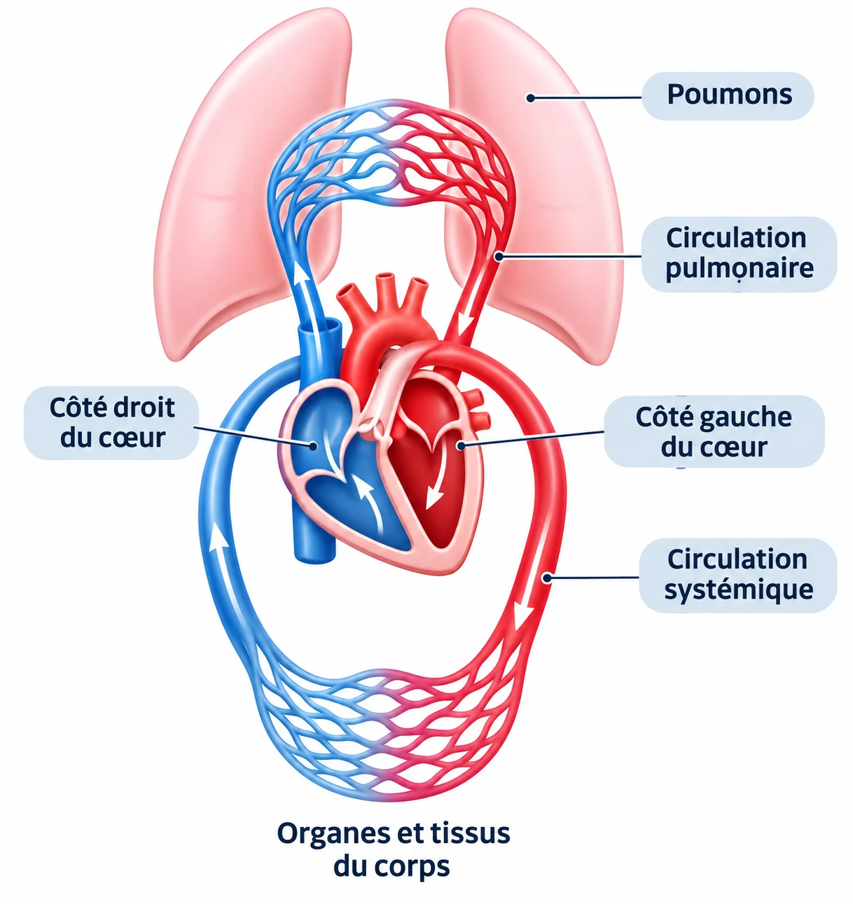
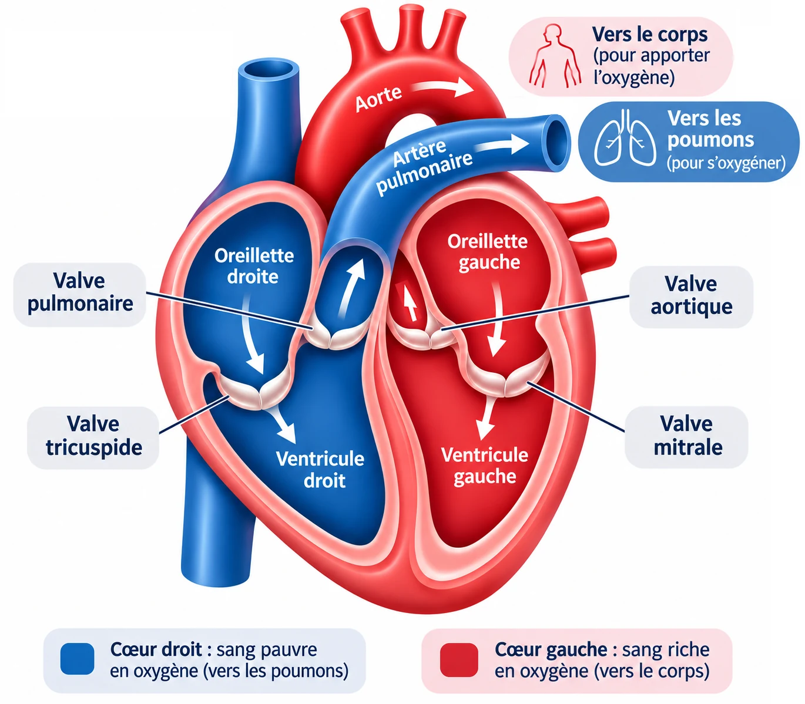
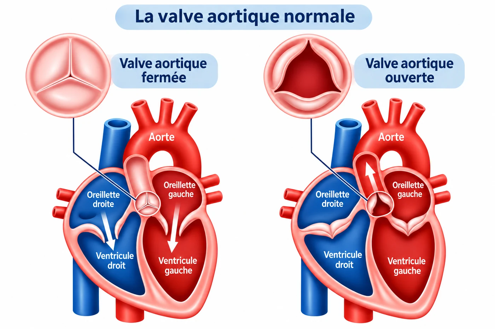
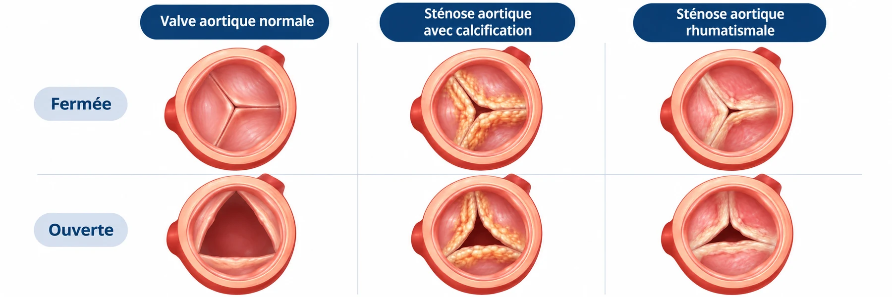
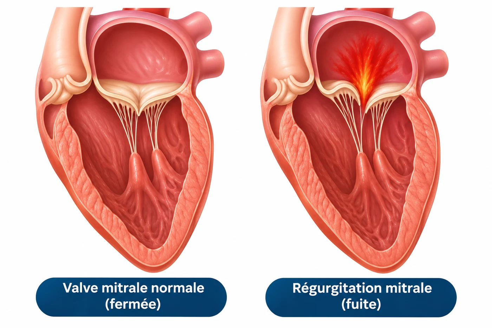
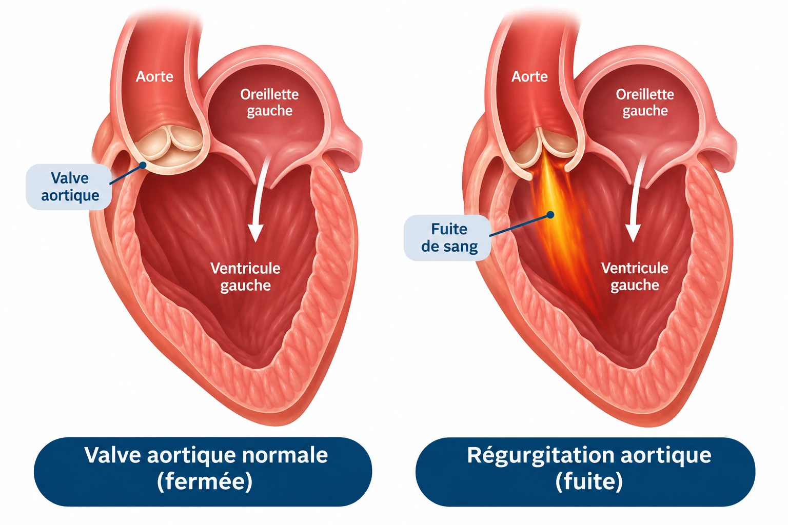
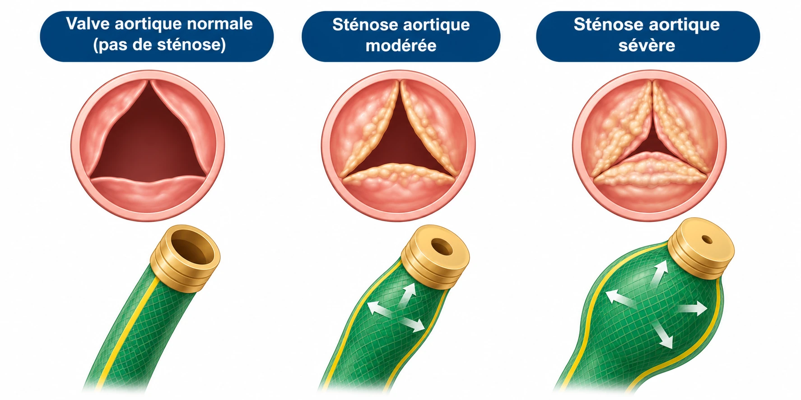
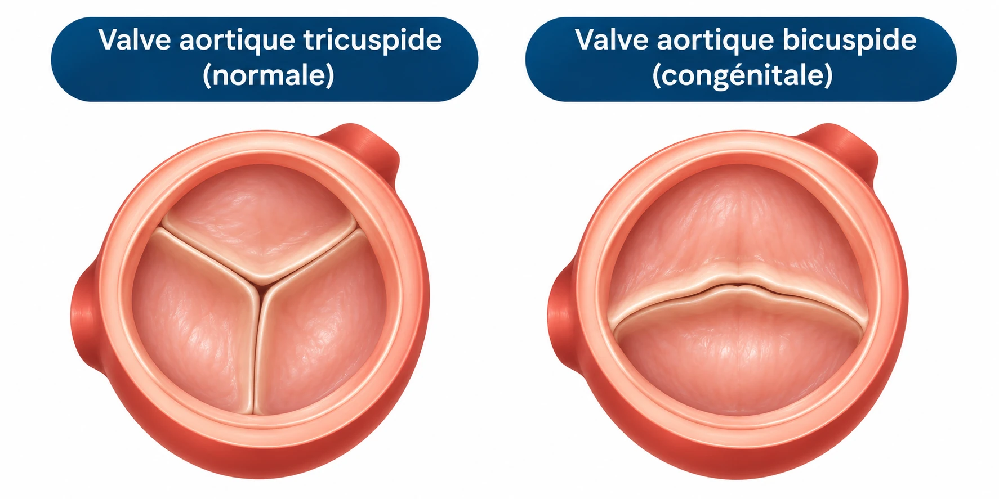

Comment fonctionnent les valves du cœur ?
Notre cœur est une formidable pompe qui fait circuler le sang dans tout notre corps. Il permet ainsi d'apporter de l'oxygène et des nutriments à chacun de nos organes.
À l'intérieur du cœur, il existe quatre cavités et quatre valves.
Qu'est-ce qu'une valve ?
Une valve est une structure composée de petites membranes souples, appelées feuillets, qui s'ouvrent et se ferment à chaque battement du cœur.
Les valves fonctionnent comme des portes à sens unique : elles s'ouvrent pour laisser passer le sang et se referment pour l'empêcher de revenir en arrière. Elles permettent ainsi au sang de toujours circuler dans la bonne direction.
Les quatre valves du cœur
Notre cœur est composé de deux parties : le cœur droit, qui envoie le sang vers les poumons pour qu'il se charge en oxygène, et le cœur gauche, qui distribue le sang riche en oxygène à l'ensemble du corps.

Chacune de ces deux parties possède deux valves.
Dans le cœur droit :
- la valve tricuspide, qui permet au sang de passer de l'oreillette droite au ventricule droit ;
- la valve pulmonaire, qui permet au sang de quitter le cœur vers les poumons.
Dans le cœur gauche :
- la valve mitrale, qui permet au sang de passer de l'oreillette gauche au ventricule gauche ;
- la valve aortique, qui permet au sang de quitter le cœur pour être distribué à tout le corps.

Comment les valves s'ouvrent-elles et se ferment-elles ?
Les valves n'ont pas besoin de muscles pour s'ouvrir : leur fonctionnement est complètement passif. Elles s'ouvrent et se ferment naturellement grâce aux différences de pression du sang à l'intérieur du cœur.
Lorsque le médecin écoute votre cœur avec un stéthoscope, les deux principaux bruits qu'il entend, le fameux « boum-boum », sont associés à la fermeture de vos valves.

Que se passe-t-il lorsqu'une valve est malade ?
Il existe deux grands types de problèmes.
La sténose : une valve qui s'ouvre mal
La valve devient plus rigide ou plus épaisse (à cause de fibrose ou de calcium), ou ses feuillets sont fusionnés (atteinte rhumatismale). Elle ne s'ouvre alors plus suffisamment : le passage du sang devient plus difficile, et le cœur doit travailler davantage pour faire circuler le sang.
C'est un peu comme essayer de faire passer de l'eau à travers un tuyau rétréci.

La régurgitation (ou insuffisance valvulaire) : une valve qui se ferme mal
La valve ne se ferme plus complètement. Une partie du sang repart alors dans la mauvaise direction. Le cœur doit pomper davantage pour compenser cette fuite.
C'est un peu comme une porte qui ne ferme plus correctement.


Une même valve peut présenter ces deux problèmes à la fois. De plus, il est possible d'avoir plusieurs valves malades.
Conséquences des maladies des valves sur le fonctionnement du cœur
Quand une valve est sténosée, elle est plus difficile à ouvrir et laisse moins de place pour le passage du sang. Le cœur doit donc pousser plus fort pour faire passer le sang de l'autre côté de cette valve.

De même, quand une valve fuit, une partie du sang revient en arrière : le cœur pompe un volume de sang « qui ne sert à rien », puisqu'il ne fait que passer d'une cavité à l'autre avant de revenir dans la cavité précédente. Par exemple, lors d'une fuite mitrale, le sang s'écoule de l'oreillette vers le ventricule gauche, ce qui est normal, puis une partie de ce sang retourne dans l'oreillette gauche. Encore une fois, une partie du travail du cœur est inutile.
Plus les maladies valvulaires sont sévères, plus ce travail supplémentaire est important. À long terme, le cœur s'essouffle : c'est l'insuffisance cardiaque. Il est donc important de traiter les maladies valvulaires avant d'arriver à ce stade.
Pourquoi les valves du cœur deviennent-elles malades ?
Plusieurs facteurs peuvent expliquer le développement d'une maladie des valves :
- Le vieillissement : avec les années, les valves peuvent s'épaissir, devenir plus rigides et accumuler du calcium.
- Une particularité présente dès la naissance : certaines personnes naissent avec une valve dont la forme est différente. C'est notamment le cas de la valve aortique bicuspide, qui possède deux feuillets au lieu de trois.

La valve aortique normale, à trois feuillets, et la valve aortique bicuspide, à deux feuillets. - Certaines maladies du cœur : lorsque le cœur se dilate ou que sa forme change, les valves peuvent ne plus se fermer correctement, même si elles ne sont pas directement abîmées.
- Une infection : certaines bactéries peuvent infecter et endommager les valves. On parle alors d'endocardite.
- Certaines maladies inflammatoires, notamment le rhumatisme articulaire aigu, qui peuvent laisser des cicatrices sur les valves.
- Certains facteurs de risque, comme l'âge, l'hypertension artérielle, le diabète, le tabagisme ou un taux élevé de cholestérol, peuvent également favoriser le développement ou la progression de certaines maladies valvulaires.
Quelles sont les maladies des valves les plus fréquentes ?
La sténose aortique
La valve aortique s'épaissit et devient progressivement plus rigide, souvent en raison d'une accumulation de calcium et de tissu fibreux. Elle s'ouvre de moins en moins bien. Cette maladie est particulièrement fréquente chez les personnes âgées.
La régurgitation mitrale
La valve mitrale ne se ferme plus correctement. Une partie du sang retourne vers l'oreillette gauche, la cavité qui reçoit le sang des poumons. Cette fuite peut être liée à un problème de la valve elle-même ou à une modification de la forme du cœur.
La régurgitation tricuspide
La valve tricuspide laisse le sang revenir en arrière dans la partie droite du cœur. Lorsqu'elle devient importante, cette fuite peut notamment provoquer un gonflement des jambes ou de l'abdomen.
La régurgitation aortique
La valve aortique ne se ferme plus complètement. Une partie du sang qui vient d'être propulsé vers le corps revient dans le cœur.
Est-ce grave ?
Oui, mais pas forcément tout de suite. Une maladie valvulaire peut être légère, modérée ou sévère. Certaines personnes vivent pendant de nombreuses années avec une maladie valvulaire sans ressentir de symptômes.
Cependant, une maladie des valves évolue toujours, plus ou moins vite. Si elle n'est pas traitée, elle finit par mener à l'insuffisance cardiaque. C'est pourquoi un suivi médical régulier est important, même lorsque l'on se sent bien.
Il existe aujourd'hui plusieurs possibilités de prise en charge et de traitement adaptées à chaque situation.
Que pouvez-vous faire ?
Si l'on vous a déjà dit que vous aviez un souffle cardiaque, ne le laissez pas dormir : parlez-en à votre médecin.
Si vous avez plus de 60 ans, ou s'il y a des maladies valvulaires dans votre famille, faites écouter votre cœur au stéthoscope tous les ans.
À retenir
- Les quatre valves du cœur permettent au sang de circuler dans la bonne direction.
- Une valve malade peut mal s'ouvrir (sténose) ou mal se fermer (régurgitation).
- Une maladie valvulaire peut être présente sans provoquer de symptômes.
- Un diagnostic précoce et un suivi adapté permettent de mieux protéger votre cœur.
L'information présentée ici est offerte à titre éducatif et ne remplace pas l'avis d'un professionnel de la santé.
Fiche suivante : En quoi les femmes sont‑elles touchées différemment ? →